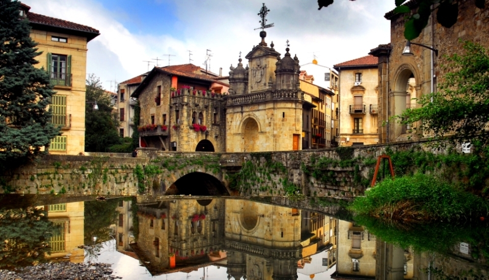

Parque Nacional Mexiquillo
Se uno con la naturaleza, en medio de la imponete sierra madre obsidental.

Fundación de la ciudad de Durango Elnacimiento de una legenda.
El 8 de julio de 1563, el explorador español Francisco de Ibarra fundó la ciudad de Durango, originalmente conocida como Villa de Guadiana.

Revolución Mexicana en DurangoLa lucha armada
(1910-1920)Durango fue un estado clave durante la Revolución Mexicana. Sus habitantes participaron activamente en el conflicto, y algunos de los líderes revolucionarios más importantes, como Francisco Villa (Pancho Villa), tuvieron raíces en esta región. Villa, uno de los personajes más influyentes del movimiento revolucionario.

Minería en DurangoMineria como eje de desarrollo
Durango fue conocido por su vasta riqueza minera, particularmente en la extracción de plata, oro y otros minerales. Durante el siglo XVIII, la minería impulsó el crecimiento económico del estado y atrajo a muchos colonos. Posteriormente, en el siglo XIX, este sector se mantuvo como uno de los pilares económicos, lo que permitió el surgimiento de una aristocracia minera y dio forma a las estructuras sociales y políticas de la región. .

Origen de su nombreUn lugar más alla del agua
El estado toma su nombre de su capital, Durango, que en euskera se traduce como “Vega rodeada de agua y montañas”. Este nombre fue asignado por Francisco de Ibarra, un conquistador español originario de Éibar, un lugar cercano a la villa de Durango en la provincia vasca de Vizcaya, España.
